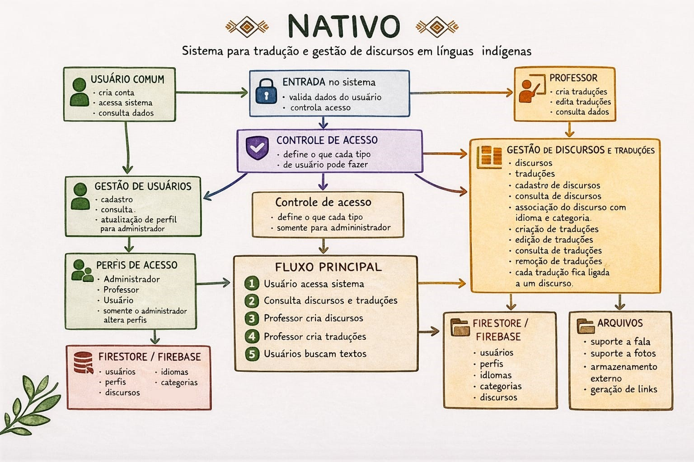
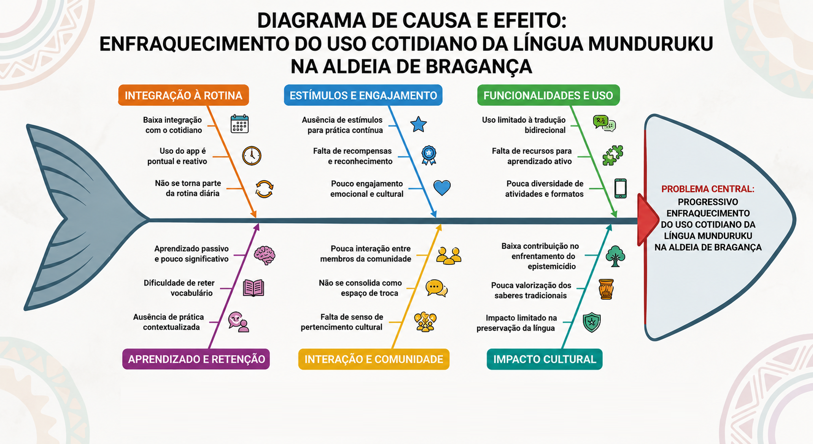
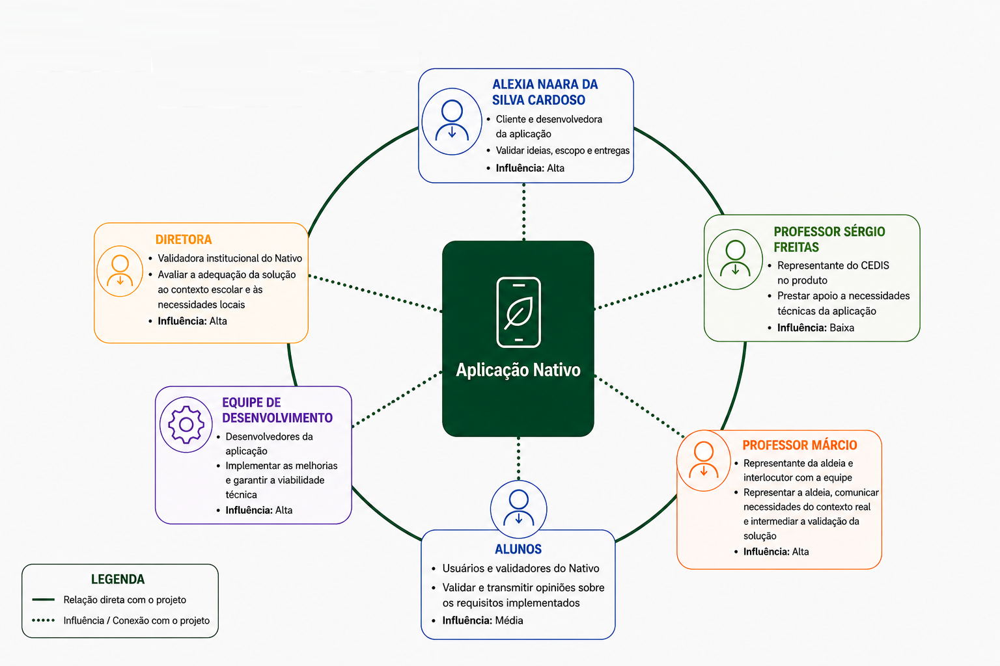

1. Cenário Atual do Cliente e do Negócio
1.1 Identificação do Cliente
| Campo | Informação |
|---|---|
| Nome | Nativo |
| Tipo | Aplicativo tradutor de línguas indígenas |
| Representante | Alexia Naara da Silva Cardoso, desenvolvedora única do projeto |
| Forma de contato | Reuniões por vídeo chamada e contato via aplicativo de mensagem |
| Vínculo com o projeto | Desenvolvedora e mantenedora da aplicação, ponte de comunicação com a aldeia de Bragança, responsável por validar decisões do projeto e avaliar entregas realizadas |
1.2. Introdução ao Negócio e Contexto
O Nativo é um aplicativo móvel tradutor voltado para a língua indigena Munduruku, com o objetivo de apoiar a revitalização linguística na Aldeia Munduruku de Bragança. Projetado e construído como um projeto de TCC de Alexia Naara a partir da orientação do Professor Doutor Sergio Antônio e coorientado pela Professora Doutora Celia Matsunaga e desenvolvido à tutela do Centro de Estudos, Desenvolvimento e Inovação em Software (CEDIS). O aplicativo conta com tradução bidirecional entre Português e Munduruku, uma sessão informativa, uma página para adicionar e editar traduções, gerenciamento de traduções e de usuários.
A missão do projeto representa uma importante iniciativa tecnológica voltada à preservação cultural e linguística dos povos originários da Amazônia. O projeto atua no processo de revitalização linguística da aldeia, onde a língua nativa tem perdido espaço e uso cotidiano, ameaçando a preservação das raízes culturais da comunidade. Para enfrentar esse enfraquecimento, o Nativo se propõe como um aplicativo móvel que funciona como um repositório de cultura e tradução bilíngue. No entanto, a aplicação não tem aderência na comunidade.
1.3 Rich Picture
O Rich Picture abaixo representa visualmente o sistema Nativo e o contexto em que ele opera, incluindo os atores envolvidos, os fluxos de informação e as tensões existentes no ambiente.

1.4. Identificação da Oportunidade ou Problema
O problema central a ser enfrentado é o progressivo enfraquecimento do uso cotidiano da língua Munduruku na Aldeia de Bragança. Esse é um cenário agravado pela falta de engajamento contínuo nas atuais ferramentas de apoio. Assim, a principal oportunidade identificada para a evolução do Nativo reside justamente em superar as limitações de uso recorrente da plataforma.
Atualmente, observa-se que a utilização do aplicativo, focada na sua função básica de tradução bidirecional, tende a ser pontual. Esse comportamento reduz significativamente o impacto da ferramenta no processo de preservação e fortalecimento da língua. Esse cenário é explicado pela baixa integração do aplicativo com a rotina dos usuários e pela ausência de estímulos que incentivem a prática constante.
Como consequência, o aprendizado ocorre de forma passiva, o que dificulta a retenção do vocabulário e o desenvolvimento de uma relação mais significativa com o idioma. Sem mecanismos de interação contínua, a plataforma ainda não se consolida como um espaço de pertencimento cultural ou de troca entre os membros da comunidade, limitando seu potencial de contribuir de forma mais ampla para o enfrentamento do epistemicídio e para a valorização dos saberes tradicionais.
Diagrama de Ishikawa

1.5. Desafios do Projeto
O principal desafio estratégico do projeto reside na complexidade do fluxo de comunicação e validação, uma vez que o contato com a comunidade Munduruku não ocorre de forma direta, mas mediado por uma representante, somado à falta de colaboradores para apoiar o desenvolvimento da aplicação. Esse cenário impacta a agilidade do desenvolvimento, dificulta a coleta de feedbacks em tempo real e compromete a realização completa do escopo inicialmente idealizado. Como consequência, decisões sobre evolução do produto, priorização de funcionalidades e validação das entregas tendem a depender de um processo mais lento e sensível a ruídos de comunicação.
Outro desafio relevante é de natureza técnica. A utilização do Flask na arquitetura atual da aplicação tem gerado dificuldades relacionadas à velocidade de funcionamento e à facilidade de evolução do sistema [5]. Isso impacta diretamente a experiência de uso e também reduz a agilidade para implementar melhorias, correções e novas funcionalidades, o que se torna ainda mais crítico em um projeto que demanda expansão contínua e adaptação às necessidades da comunidade atendida.
1.6. Mapa de Stakeholders
Os principais stakeholders do projeto são: Alexia Naara da Silva Cardoso, como cliente e desenvolvedora da aplicação, com alta influência na solução por validar ideias, escopo e entregas; Professor Sergio Freitas, como representante do CEDIS no produto, contribuindo com apoio às necessidades técnicas da aplicação, embora com menor influência nas decisões do projeto; Professor Márcio, como representante da aldeia e principal elo entre a comunidade e a equipe técnica, com alta influência por transmitir aos desenvolvedores as informações e percepções dos validadores; a diretora e os alunos, como validadores do Nativo, exercendo papel central na avaliação dos requisitos implementados e na comunicação de opiniões sobre a adequação da solução ao contexto real de uso; e a equipe de desenvolvimento, responsável por implementar as melhorias propostas e garantir a viabilidade técnica da aplicação, também com alta influência na concretização e evolução do produto.

A seguir, é apresentado um quadro resumo dos stakeholders.
| Stakeholder | Relação com a solução | Interesse principal | Influência |
|---|---|---|---|
| Alexia Naara da Silva Cardoso | Cliente e desenvolvedora da aplicação | Validar ideias, escopo e entregas | Alta |
| Professor Sergio Freitas | Representante do CEDIS no produto | Prestar apoio a necessidades técnicas da aplicação | Baixa |
| Diretora | Validadora institucional do Nativo | Avaliar a adequação da solução ao contexto escolar e às necessidades locais | Alta |
| Alunos | Usuários e validadores do Nativo | Validar e transmitir opiniões sobre os requisitos implementados | Média |
| Professor Márcio | Representante da aldeia e interlocutor com a equipe | Representar a aldeia, comunicar necessidades do contexto real e intermediar a validação da solução | Alta |
| Equipe de desenvolvimento | Desenvolvedores da aplicação | Implementar as melhorias e garantir a viabilidade técnica | Alta |
1.7 Segmentação de Usuários
O aplicativo Nativo atende a quatro principais segmentos de usuários:
-
Crianças de 6 a 12 anos: Público que busca a revitalização linguística, utilizando o aplicativo como ferramenta de consulta rápida, aprendizado fonético e associação visual da língua Munduruku.
-
Professores e Educadores: Atuam como gestores e curadores do conteúdo. Utilizam a plataforma para cadastrar, revisar e organizar o vocabulário nativo, validando a ferramenta para garantir que o conteúdo seja fidedigno.
-
Comunidade e Falantes Nativos: Representam a base de conhecimento e a memória viva da aldeia. Embora não gerenciem o app diretamente, sua colaboração é a fonte primária para as traduções e registros culturais que os professores inserem no sistema.
-
Pesquisadores e Entusiastas da Língua: Interessados na preservação da língua Munduruku, utilizam o sistema como um repositório de consulta gramatical e identidade cultural.